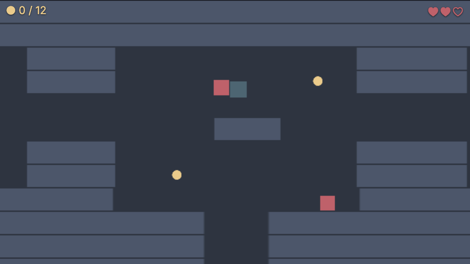
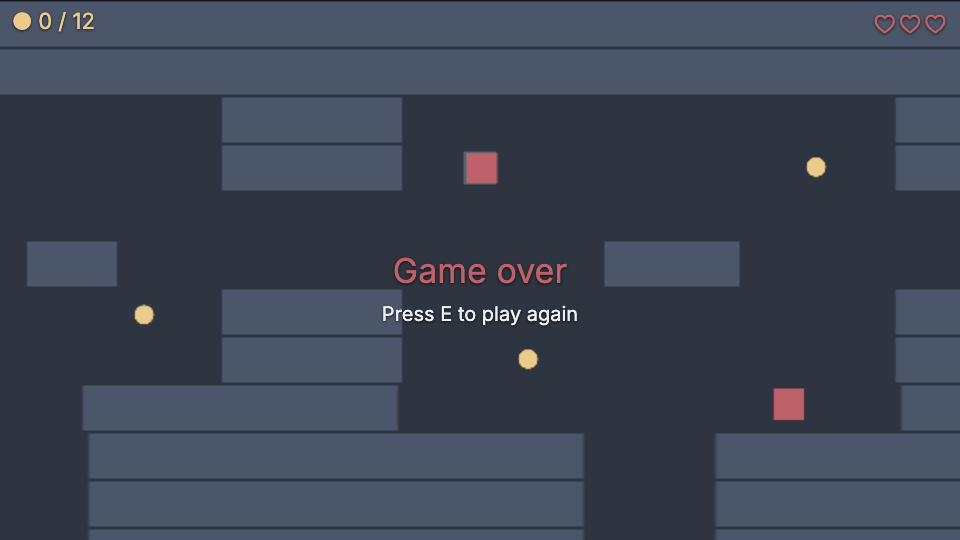

53 · Dungeon 5: Enemies and health
Part 5 of the Unity-style dungeon series, continuing from part 4, coins and score. Allow 50 minutes.
What you will build: six red enemies that wander, hunt you when you come near and hurt you on contact (with protection time and knockback), three hearts on the HUD and a game-over screen.

Download: Part 5 project, also in examples/series-dungeon/part5.
1 The enemy prefab#
The letter e in map.js marks an enemy. Make prefabs/enemy.prefab.json: a red square sprite (22 × 22, #bf616a), a dynamic rigidbody, a box collider 22 × 22, the tag Enemy and the script enemy.js. In level.js add one branch next to the coin one:
else if (ch === 'e') await Instantiate('prefabs/enemy.prefab.json', { pos: [x, y, 2] });2 The enemy brain#
Two moods: if the hero is near, chase; if not, wander. The wandering is a coroutine: "pick a direction, wait one or two seconds, pick another" without a single timer variable.
import { MonoBehaviour, SerializeField, Random, Vector2, Vector3, WaitForSeconds } from 'nord';
import Health from './health.js';
export default class Enemy extends MonoBehaviour {
static attributes = SerializeField({ speed: 80, sight: 170, reach: 24 });
Start() {
this.hero = this.Find('Hero');
this.dir = Vector2.zero;
this.StartCoroutine(this.Wander()); // a coroutine: "do this, wait, do that" without timers
}
/** Every second or two pick a new direction, and sometimes stand still. */
*Wander() {
while (true) {
const a = Random.value * Math.PI * 2;
this.dir = Random.value < 0.3 ? Vector2.zero : new Vector2(Math.cos(a), Math.sin(a));
yield new WaitForSeconds(Random.Range(1.0, 2.5));
}
}
get distance() { return Vector3.Distance(this.position, Vector3.From(this.hero.pos)); }
FixedUpdate() {
if (!this.hero || this.hero.destroyed) return;
const chasing = this.distance < this.sight;
const toHero = Vector2.From(this.hero.pos).Sub(Vector2.From(this.entity.pos));
const dir = chasing ? toHero.normalized : this.dir; // a unit vector: direction without speed
this.velocity = dir.Mul(this.speed * (chasing ? 1 : 0.4));
}
Update() {
if (this.hero && !this.hero.destroyed && this.distance < this.reach) this.hero.getScript(Health).TakeDamage(this.entity);
}
}*Wander()is a generator,yield new WaitForSeconds(…)is the same as in Unity.this.StartCoroutine(this.Wander())starts it. It stops by itself when the enemy is destroyed.Random.Range(1.0, 2.5)is a float because 2.5 is not a whole number (two whole numbers would give an integer, as in C#).- Chasing.
toHero.normalizedis a unit vector (direction without speed). Multiply it by the speed. Wandering uses 40% of the speed so the enemy looks relaxed. this.velocity = …isrb.velocity, so walls stop enemies too.Updatechecks the distance to the hero; insidereachit callsTakeDamageon the hero's Health. That is a plain method call throughGetComponent, the way you do it in Unity.
Isn't it unfair that they see through walls? Yes. We accept it here; part 6 makes the dark hide them, and Ember Crypt gives them real line of sight.
3 Lives, Health and knockback#
The hero's hearts are the GameManager's lives (startLives: 3 in the scene). A small Health script adds what a game needs around them: a grace period and blinking. Add health.js to the Hero:
import { MonoBehaviour, SerializeField, GameManager, Time } from 'nord';
import Hero from './hero.js';
/** Grace time and blinking around the GameManager's lives. Enemies call TakeDamage(); nothing else knows about hearts. */
export default class Health extends MonoBehaviour {
static attributes = SerializeField({ grace: 1 });
Awake() { this.protectedFor = 0; }
TakeDamage(from) {
if (this.protectedFor > 0 || GameManager.instance.state === 'gameover') return; // still protected, or already dead
this.protectedFor = this.grace;
GameManager.instance.LoseLife(); // emits 'lives', and 'gameover' at 0
this.GetComponent(Hero).Knockback(from); // GetComponent<Hero>().Knockback(from)
}
Update() {
this.protectedFor = Math.max(0, this.protectedFor - Time.deltaTime);
const blink = this.protectedFor > 0 && Math.floor(this.protectedFor * 10) % 2 === 0;
this.entity.set('sprite', 'alpha', blink ? 0.35 : 1); // a field of the sprite component
}
}- Grace. After a hit the hero is protected for
graceseconds; without it an enemy touching the hero would take a heart every frame. GameManager.instance.LoseLife()emitslives, and at zerogameover. Health does not know about hearts or HUDs.this.GetComponent(Hero).Knockback(from)isGetComponent<Hero>().Knockback(from).- The blink toggles the sprite's alpha ten times a second:
entity.set('sprite', 'alpha', value)changes a field of the sprite component.
The hero reacts to the knockback:
import { MonoBehaviour, SerializeField, UnityInput as Input, GameManager, Time, Vector2 } from 'nord';
export default class Hero extends MonoBehaviour {
static attributes = SerializeField({ speed: 160, knockbackSpeed: 260 });
Start() { this.stun = 0; this.kick = Vector2.zero; }
/** Called by Health when we are hit: fly away from the attacker for a moment. */
Knockback(from) {
const away = new Vector2(this.position.x - from.pos[0], this.position.y - from.pos[1]).normalized;
this.kick = away.Mul(this.knockbackSpeed);
this.stun = 0.15; // no steering while we fly backwards
}
FixedUpdate() {
if (GameManager.instance.state === 'gameover') { this.velocity = Vector2.zero; return; }
if (this.stun > 0) { this.stun -= Time.fixedDeltaTime; this.velocity = this.kick; return; }
const move = Vector2.ClampMagnitude(new Vector2(Input.GetAxis('Horizontal'), Input.GetAxis('Vertical')), 1);
this.velocity = new Vector2(move.x, -move.y).Mul(this.speed);
}
}- The direction away from the attacker is
hero − attacker, normalised; multiply byknockbackSpeed. - While
stun > 0the player cannot steer; the push velocity is applied instead. 0.15 seconds is long enough to feel and short enough not to annoy. - After the last heart (
state === 'gameover') the hero stops.
4 Hearts and game over#
The HUD draws hearts from the manager's lives and has one Finish for both endings:
import { MonoBehaviour, GameManager, EventBus, UnityInput as Input, KeyCode } from 'nord';
export default class Hud extends MonoBehaviour {
Start() {
this.total = 0;
this.score = this.ui.label('', { screen: 'hud', x: 12, y: 8, size: 22, color: '#ebcb8b' });
this.hearts = this.ui.label('', { screen: 'hud', anchor: 'tr', x: 12, y: 8, size: 26, color: '#bf616a' });
this.offs = [
EventBus.Subscribe('level', ({ coins }) => { this.total = coins; this.Refresh(); }),
EventBus.Subscribe('score', () => this.Refresh()),
EventBus.Subscribe('lives', () => this.Refresh()),
EventBus.Subscribe('gameover', () => this.Finish('Game over', '#bf616a')),
];
this.Refresh();
}
Refresh() {
const gm = GameManager.instance, max = gm.attrs.startLives;
this.score.set(`● ${gm.score} / ${this.total}`);
this.hearts.set('♥'.repeat(gm.lives) + '♡'.repeat(max - gm.lives));
if (this.total > 0 && gm.score === this.total && gm.state === 'playing') this.Finish('You found all the coins!', '#a3be8c', true);
}
Finish(text, color, won = false) {
if (this.over) return; // win and die in the same second: show one ending
this.over = true;
if (won) GameManager.instance.SetState('won');
this.ui.label(text, { screen: 'hud', anchor: 'c', size: 34, color });
this.ui.label('Press E to play again', { screen: 'hud', anchor: 'c', y: 44, size: 20 });
}
Update() {
if (this.over && Input.GetKeyDown(KeyCode.E)) GameManager.instance.Restart();
}
OnDestroy() { this.score?.remove(); this.hearts?.remove(); this.offs?.forEach((off) => off()); }
}'♥'.repeat(gm.lives) + '♡'.repeat(max − gm.lives) builds the hearts. GameManager.instance.attrs.startLives is the maximum. Finish has a guard (this.over) so that winning and dying in the same second shows one ending only.
Press Play. Walk near an enemy: it comes for you, a heart disappears, you are pushed back and blink for a second. Lose all three: Game over, E restarts.

5 Check yourself#
- Stand still next to an enemy: you lose one heart per second, not per frame.
- Collect the last coin and die in the same second: only one message.
- Restart three times: hearts are full each time, no doubled labels.
If an enemy never hurts you, check that the hero is named Hero (the enemy finds it by name) and has Health.
What you learned#
- A simple enemy: a coroutine for wandering, a unit vector for chasing.
GetComponent(Class)and plain method calls between scripts.- The GameManager's lives as hearts; grace time prevents damage every frame.
- One script, one job: Health knows grace, not enemies or HUDs.
Next: Part 6, light and shipping.